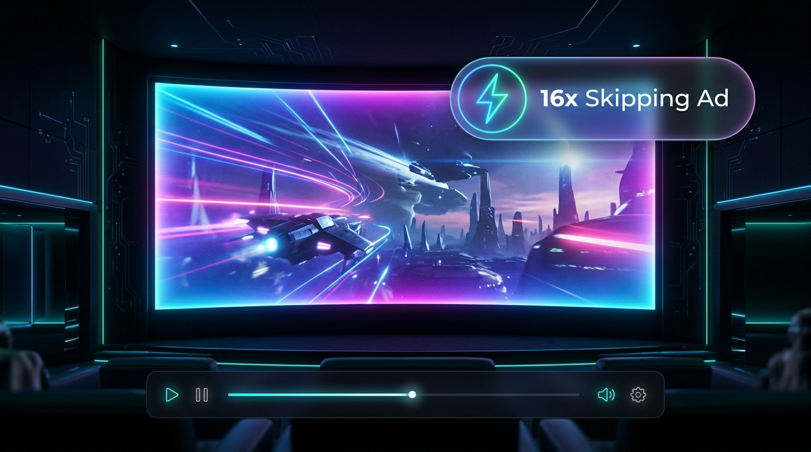
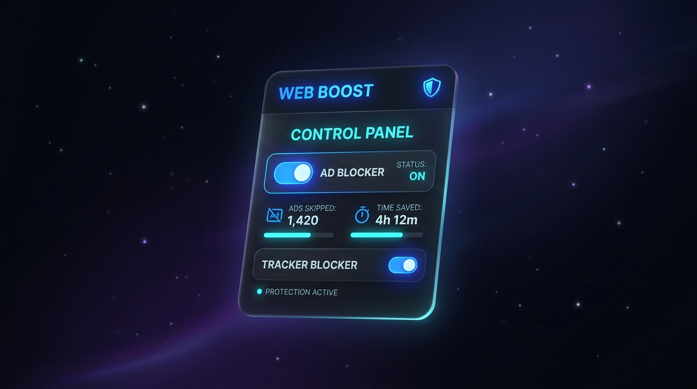

The ultra-lightweight Chrome extension that accelerates in-video ads to 16x speed, automatically silences commercial audio, auto-clicks skip buttons, and removes homepage banners.

Click the trigger button below to simulate how the extension handles unskippable Hotstar ads.
Designed to eliminate every category of ad intrusion without breaking video streams or Widevine DRM.
The instant an in-video advertisement triggers, playback is accelerated to HTML5's maximum 16x speed. A grueling 30-second commercial finishes in approximately 1.8 seconds.
Commercials are often mixed louder than content. The extension mutes audio the moment the ad begins and restores your previous volume the millisecond your show resumes.
Wipes out invasive homepage billboard banners, masthead ads, and companion promo cards so your Hotstar interface stays clean and clutter-free.
Monitors the player and automatically clicks "Skip Ad", "Skip Intro", and "Skip Recap" the instant they become clickable.
Operates purely on HTML5 video elements without tampering with protected network chunks or DRM licenses. Zero buffering, zero playback errors, and zero "Page Unresponsive" crashes.
Runs entirely inside your browser. No telemetry, no external ad servers, no account required. All code is public on GitHub.
Fine-tune your streaming experience directly from the sleek dark-mode popup in your Chrome toolbar.

Compatible with Google Chrome, Brave, Microsoft Edge, Opera, and Vivaldi.
Clone the repository or download the ZIP from GitHub and extract it to your computer.
git clone https://github.com/mihirverma7781/jio-hotstar-ad-blocker.git
Navigate to chrome://extensions in your browser URL bar and toggle Developer mode in the top-right corner.
Click the Load unpacked button and select the extracted project folder. You're ready to stream ad-free!
Get the repository and experience true ad-free streaming on Hotstar.
Hotstar uses server-guided and in-video ad streaming. When our detector recognizes the ad markers (such as the "Go Ads free" prompt or the countdown timer), it immediately applies HTML5's maximum native playback rate (16x) and silences audio. A standard 30-second commercial concludes in less than 2 seconds, and normal 1.0x playback resumes automatically.
No. Unlike aggressive network interceptors that break encrypted streams or crash the player with "Page Unresponsive" errors, this extension operates purely as an HTML5 video controller in an isolated sandbox. It never touches DRM license keys or streaming chunks.
Yes. The extension includes cosmetic filtering and DeclarativeNetRequest rules that suppress top masthead billboards, video cards, companion ads, and subscription nudges.
Protected commercial streams use Encrypted Media Extensions (EME) and hardware-level Digital Rights Management (Widevine/HDCP). The operating system and GPU driver intentionally prevent screen capture tools from reading protected video frames, which results in a black video plane while player controls remain visible. The extension's Presenter Mode ensures your shared browser tab stays clean and free of extraneous HUD badges or filter glitches during meetings.
Any Chromium-based browser supporting Manifest V3, including Google Chrome, Brave, Microsoft Edge, Opera, and Vivaldi.